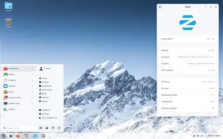

Présentation
Zorin OS est une distribution Linux élégante et performante, basée sur Ubuntu. Elle est conçue pour faciliter la transition depuis Windows ou macOS.
Image de l'interface
Les versions disponibles
- Zorin OS Core – Gratuit
- Zorin OS Lite – Léger pour les anciens PC
- Zorin OS Education – Pour les écoles
- Zorin OS Pro – Version complète avec plus de logiciels
Tableau des prix
| Version | Prix |
|---|---|
| Core | Gratuit |
| Lite | Gratuit |
| Education | Gratuit |
| Pro | 39 € |
En savoir plus
Pour plus d'informations, visitez le site officiel de Zorin OS.